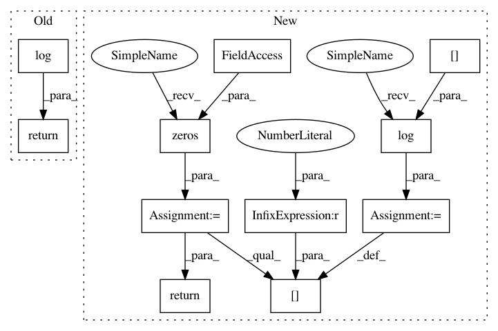

0340fa389a69f1aa28b45a37599ac8b8353efd26,labs/sequences/log_domain.py,,safe_log,#Any#,10
Before Change
def safe_log(x):
if x == 0:
return logzero()
return np.log(x)
def logsum_pair(logx, logy):
"""
Return log(x+y), avoiding arithmetic underflow/overflow.
After Change
// return -np.inf
def safe_log(x):
y = np.zeros(x.shape) + logzero()
y[x>0] = np.log(x[x>0])
return y
def logsum_pair(logx, logy):
"""
Return log(x+y), avoiding arithmetic underflow/overflow.
In pattern: SUPERPATTERN
Frequency: 3
Non-data size: 11
Instances
Project Name: LxMLS/lxmls-toolkit
Commit Name: 0340fa389a69f1aa28b45a37599ac8b8353efd26
Time: 2013-07-16
Author: ramon@astudillo.com
File Name: labs/sequences/log_domain.py
Class Name:
Method Name: safe_log
Project Name: SheffieldML/GPy
Commit Name: 60d0e2f79d6ca2a8b4ca0f3d5829e1c97269df54
Time: 2017-08-07
Author: eero.siivola@aalto.fi
File Name: GPy/likelihoods/binomial.py
Class Name: Binomial
Method Name: logpdf_link
Project Name: SheffieldML/GPy
Commit Name: 841ca66170ecb851d2f1db9df22277318135f12f
Time: 2017-08-10
Author: eero.siivola@aalto.fi
File Name: GPy/likelihoods/binomial.py
Class Name: Binomial
Method Name: logpdf_link